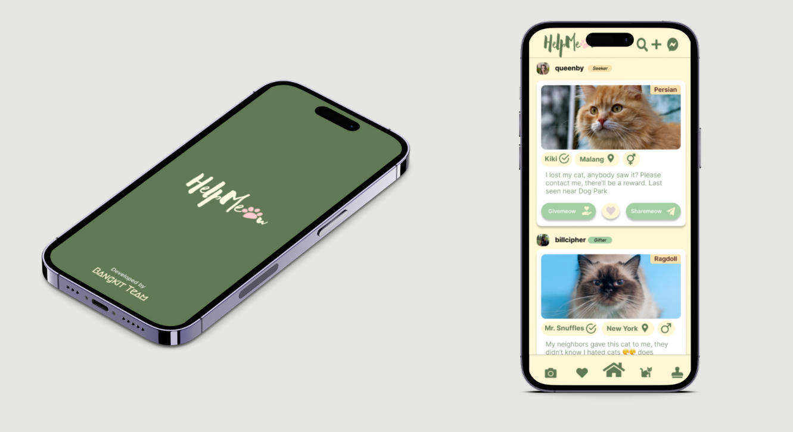
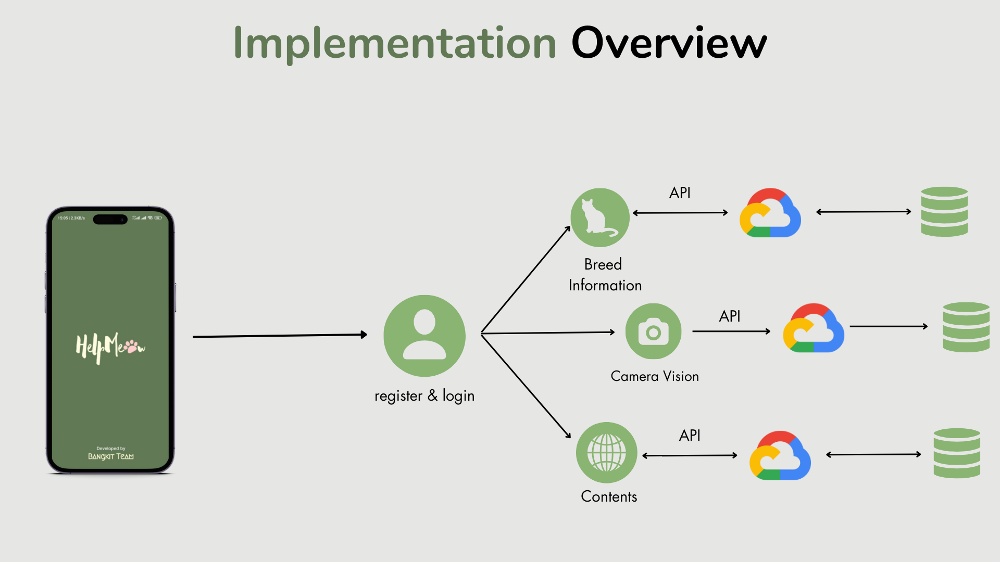
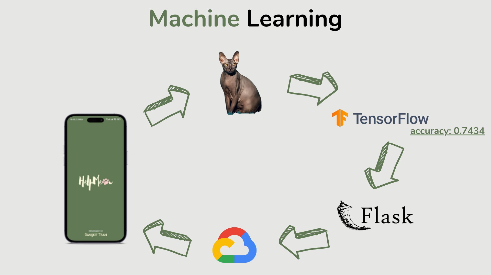
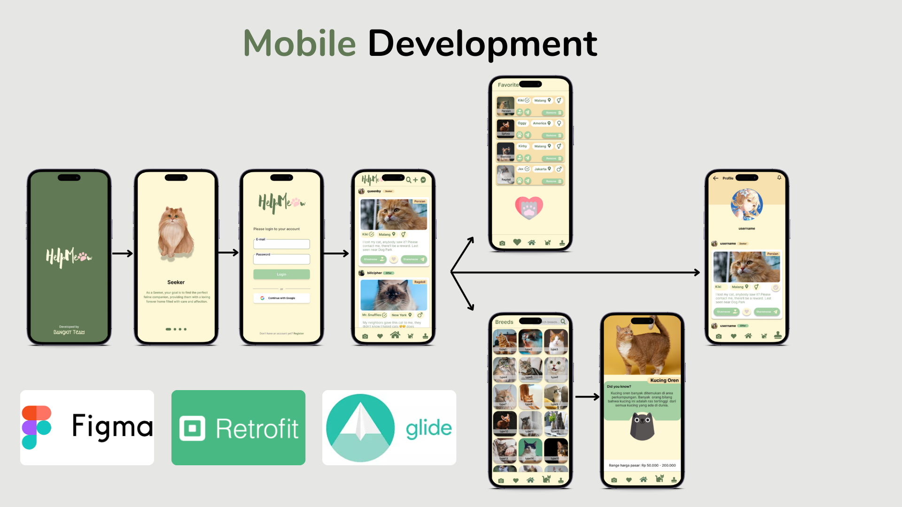
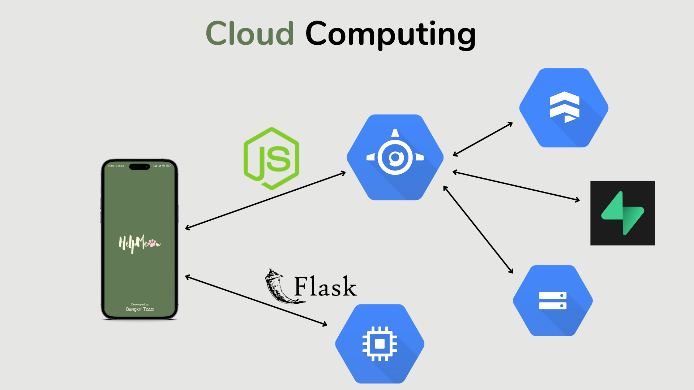
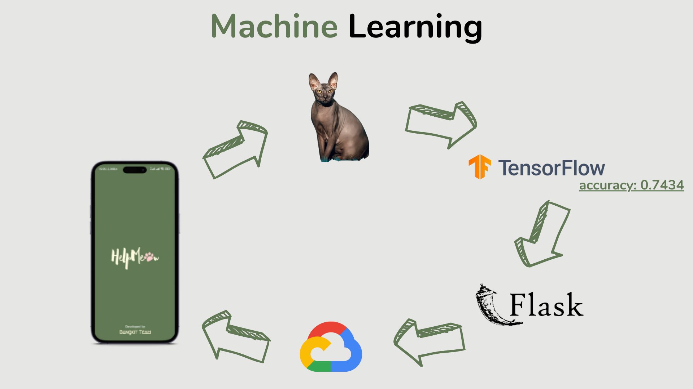
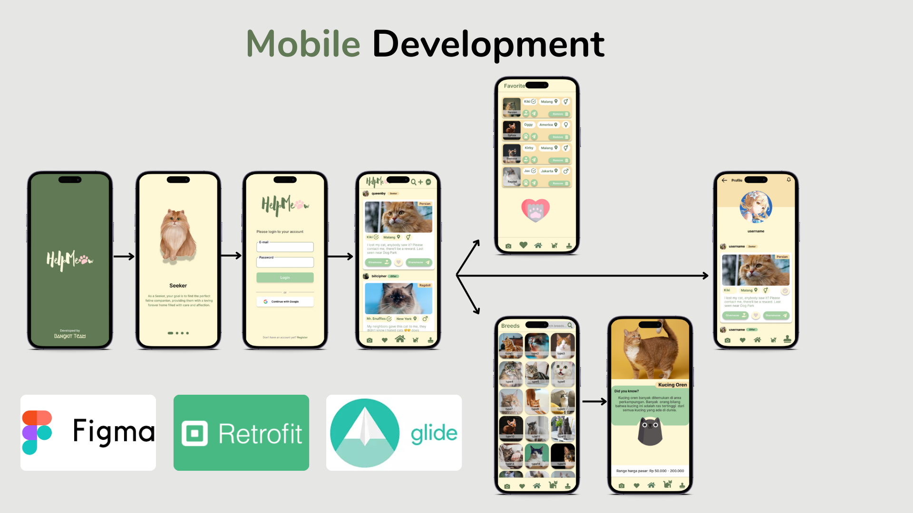
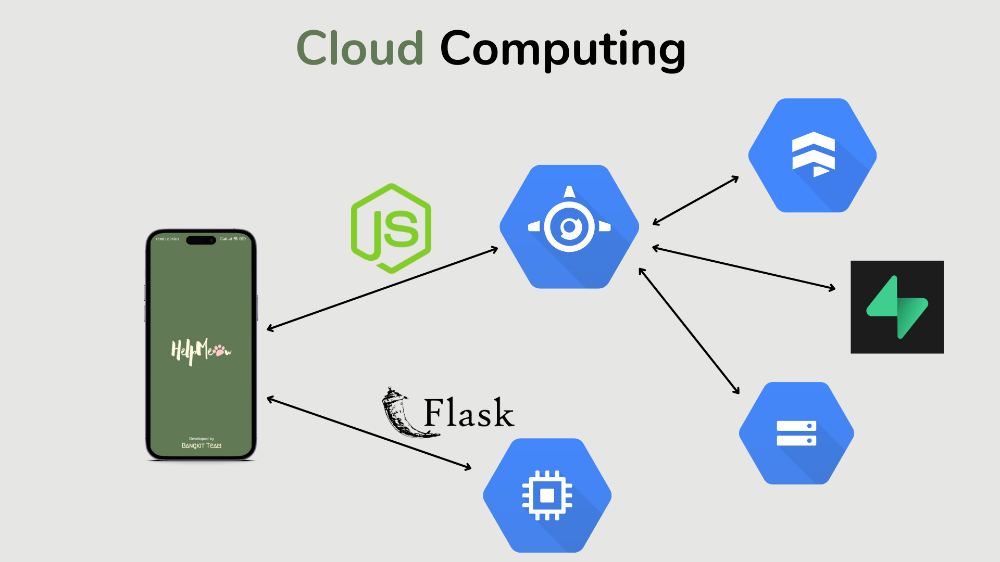

HelpMeow
HelpMeow is a capstone project from the Bangkit program, dedicated to improving the lives of lost and stray cats while fostering a community of cat lovers. The mobile app provides a platform for users to support and care for stray cats, offering various roles such as Seeker, Gifter, and Watcher to gather and share information about stray cats in their area.

HelpMeow addresses the issue of stray cats by leveraging modern technology and community engagement. The app includes features such as:
- User Roles:
- Seeker: Obtain information about stray cats.
- Gifter: Provide information about stray cats.
- Watcher: Access both options to stay informed and contribute.
- Image Detection: Uses advanced image detection to identify cat breeds, providing detailed information on each breed. The app can classify 50 different cat breeds.
- Social Media Interface: Offers a familiar and user-friendly interface similar to social media platforms, encouraging interaction and engagement among users.
- Cat Tracking: Tracks rescued cats to ensure they receive proper care and support.
- Community Building: Aims to create a supportive community of cat lovers who can collaborate and share resources for the welfare of stray cats.
Skills: Machine Learning, Web Scrapping, Computer Vision, TensorFlow, Flask
Contribution:
- Creating a cat breed classification model using TensorFlow and Flask. The model can identify 50 different cat breeds from images.
- Accuracy Achievements: The classification model achieved an accuracy of 0.7434 and a top-5 accuracy of 0.9365.
- Ensuring the seamless integration of the machine learning model with the mobile app, allowing users to easily identify cat breeds through the app interface.
Implementation Overview

Machine Learning FLow 
Mobile APP Interface 
Backend Cloud 
Machine Learning FLow 
Mobile APP Interface 
Backend Cloud 